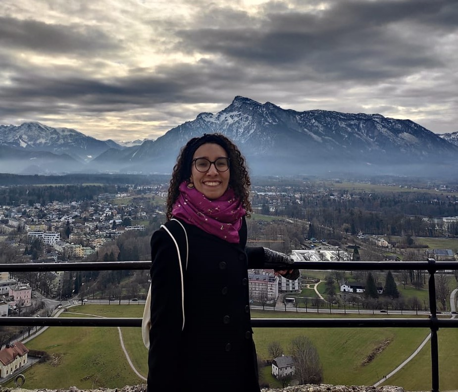

About
Hello, my name is Vitoria Barbosa Ferreira, I am a Graduate Student from Brazil, sponsored by the Erasmus + programme. I am very passionate about getting in touch with multicultural environments and interested in everything related to maps!
Shortly about my background, I have a major in Geography and a minor in Teaching Geography by the University of Sao Paulo (Sao Paulo, Brazil). Currently, I am pursuing the Copernicus Master in Digital Earth (CDE). The opportunity to attend the CDE programme is helping me to take my understanding of map elaboration to a next level, since it is particularly focused in geoinformatics. Within this master I am developing skills in spatial analysis, research communication, remote sensing and programming applied to the Geo field.
For more about my professional steps, here is a link to my LinkedIn profile.